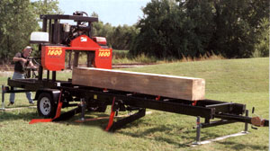

Portable sawmills fall into three general categories: chainsaw mills, circular sawmills and band sawmills. They are available in a diversity of styles and operating systems, and are priced to fit any budget. "Which to pick," says Will Johnson, president of TimberKing, a portable sawmill manufacturing company, "depends on what you are going to do with it."
The variables, he says, are how much lumber you plan to saw and how quickly you need to cut it. A third variable is hour finely finished you need the boards to he. Here are the pros and cons of each type of mill:
CHAINSAW MILLS
From a cost standpoint, chainsaw mills are inexpensive, and thus very appealing for homestead and farm use. Prices start under $100. But these mills are relatively slow, which means you can use them for major projects only if you have lots of time. Even with the special chains used for lumbering, they still make rough cuts; further milling is required for finished surfaces.
And they waste a lot of wood. "Generally," say's Erin Domagalski of Hud-Son Forest Equipment, "a chainsaw mill has 20 percent more kerf (width of the blade cut) than a band sawmill."
Most chainsaw mills require heavy-duty power heads. Your current chainsaw may not he powerful enough to run it, and a new chainsaw-which can double the cost-may be needed. Special-purpose chains and bars are required as well.
Most chainsaw mills are used with a framework you construct around the log you are cutting, which can he a slow, awkward process. Lining up the first cut is particularly important with these mills, because that surface acts as a guide for the rest of your cuts. The Alaskan Mark III from Granberg International (shown at right) is a good example of this type of chainsaw mill. Exceptions, such as the Total J100 (available through Tilton Equipment Co.), consist of a rail-and-stand system in which the log is held by base stands and the saw rides upside down on the rails.
CIRCULAR SAWMILLS
At one time, all sawmills used circular blades. Most larger commercial operations still do. Their primary benefit is speed. Circular saws cut much faster than band saw's, but the downsides are that they are expensive and they usually have a larger kerf, so they waste more wood. The quality of the cut tends to be on the rough side.
Circular sawmills tend to be transportable, but not portable. They can take as much as a full day to erect once moved to the work site. And most times a crew of three to five people is needed to operate one efficiently and safely.
Older circular sawmills work with a vertical blade mounted in the bottom of the bed, similar to a workshop table saw. Modern ones position the blade overhead, with safety guards, like a radial arm saw. A good representative is the Mighty Mite "D" series sawmills, which are priced starting at $29,500.
A novel approach is the Lucas Mill, an Australian design imported by Bailey's, which uses a special five-tooth, thin kerf blade mounted horizontally to cut logs that sit on the ground instead of laying on a bed.
BAND SAWMILLS
Today's portable sawmill industry is dominated by bandmills. Technology has made them available in such an array of configurations and operating systems that they've almost displaced circular sawmills.
Although slower than circular sawmills, bandmills are truly portable either with an integral trailer system, or inside a pickup truck. They are simple and safe to operate; produce less waste because of a smaller kerf; create smoother surfaces, requiring less milling; and are flexible enough to cut specialty lumber, such as shakes, shingles and clapboards. And they are much more affordable, starting around $3,500.
Depending on your needs, they come configured as small, manually operated mills; as midsized units with power heads and basic hydraulics; and as industrial strength mills, with power heads, built-in de barkers, hydraulic log-handling systems and computerized networks.
When choosing a bandmill, the one thing you don't have to worry about is its cutting quality. Virtually all modern bandmills produce the same high-quality surfaces, requiring little final finish work. Configuration and cutting speed are the two important variables within each class.
However, don't pay much attention to manufacturers' claimed production speeds, says TimberKing's Will Johnson. "Productivity numbers are almost meaningless," he says. "There are just too many variables-including log size, lumber thickness and how fast the operator can work-to provide realistic production figures."
Decide whether or not you really need the particular bells and whistles on any given model. While full hydraulics are helpful, for instance, they can push the price up to $30,000 very quickly.
Manual bandmills come with either ground-level or elevated beds. Ground-level beds usually are found on mills that are transported by truck. Log handling is a lot easier with them, but there may be more operator fatigue from constant bending. Elevated-bed mills usually are transported by trailer, and are easier to operate. But log handling is more of a bother, requiring ramps, lifts or additional equipment.
Manual bandmills can be used for commercial cutting, but are considered best for personal use on farms and small acreage's.
A step up from manual mills are those with automatic carriage-feed systems and, in some cases, automatic setworks. Most do not include log-handling hydraulics. These mills are a lot less labor intensive, and are good for custom sawing. They also are a good option for those with physical limitations, or for jobs requiring a lot of cutting in a short time period.
Bandmills in the middle price range include hydraulic log loading, turning, clamping, and, in some cases, hydraulic toe boards. They are considered ideal for custom-cutting and production.
At the top of the line are the high production bandmills. These come with complete hydraulic and electronic operations for greater production, custom sawing and commercial lumber manufacturing.
When you're considering purchasing a sawmill, part of your decision should include what necessary accessories, such as log-handling equipment, you might need. If you can do the job with cant hoops and peavey poles, then a manual mill might meet all your requirements. But if you want to cut bigger logs that require a separate log lifter, then a hydraulic mill might make better sense.
Points to Ponder
Sawmill marketing data and catalogs seem so filled with hyperbole and lack of objective comparisons that it can be difficult to know what to consider when buying a mill. We asked Brian Grodner, co-owner of The Sawmill Exchange, [(800) 459-2148; www.sawmillexchange.com ] the largest broker of used sawmills in the country, for his thoughts. Grodner has no dog in this fight, so his comments are worth listening to. Among the things he says to consider:
Ask the owners! Never buy a portable sawmill without first conferring with sawmill owners. They are your absolute best source for factual, honest information on how you can expect a brand and model to perform.
Income. Will you use the mill full time or part time? Will the milt provide all or part of your income?
Production. What is the minimum amount of daily production you require to meet your income needs? Before deciding on a unit, check with owners of that make and model to make sure you can use it to meet your production goals.
Generally, the less expensive the mill, the lower its production rate. If you are considering commercial sawing, remember that sawmilling is very physically demanding; you'll want to find a mill that suits your work pace.
Other major components. Sawmill system components include edgers, planers, debarkers, bark cleaners and dry kilns. If you're using a circular sawmill and want to produce more than rough-cut lumber, planers are essential. Debarkers and bark cleaners increase the life span of your bands and blades. Kiln-dried lumber sells for a significantly higher price than green lumber. Your choice of major components depends mainly on your production requirements and budget.
Accessories and sharpening equipment. Very rarely will you see a portable sawmill without accessories, which might include the trailer package, extra bands and a sharpening system. These accessories can add as much as $5,000 to the cost of the sawmill.
Hybrid Sawmills
Not every portable sawmill readily fits into one category or another. Hybrid sawmills combine parts and functions of several categories. There are two of particular note:
Logosol's M7 Swedish Mill (shown above): The chainmill that thinks it's a bandmill. At first glance, the Swedish Mill looks like a bandmill. It uses an adjustable log bed, power-head rail, logdogs (clamps that hold the logs in place) and an overhead support arm, like all bandmills. But the power head is a chainsaw.
Not any chainsaw will work with it, however. Logosol recommends the Husqvarna 395XP, which generates 7.1 horsepower. Along with the heavy-duty power head, a special bar and low-profile chain produce a 1/4-inch kerf, about the same as a band saw. The final finish is said to be equal to a band blade as well. Bars are available in 16-,20- and 25-inch cutting lengths.
Better Built's Ripsaw The bandmill that thinks it's a chainmill. Imagine lifting the entire power head and blade support off a bandmill, then building a cutting guide around a log (as you would with a chainmill), and hand-feeding the band saw into the log. In a nutshell, that's the RipSaw.
The Ripsaw comes in two versions. One has its engine. The other is a conversion kit that lets you turn your chainsaw into a bandmill in about 10 minutes. According to the manufacturer, you can use the chainsaw to fell trees, then install the conversion kit and turn those trees into finished lumber.
|
 Les Oke of Northbrook, Ontario, cut all the lumber for his house with this Granberg International Alaskan Mark III chainsaw mill. |
A portable band sawmill can produce boards and beams in almost any size you want. |
|
|
|
|
|